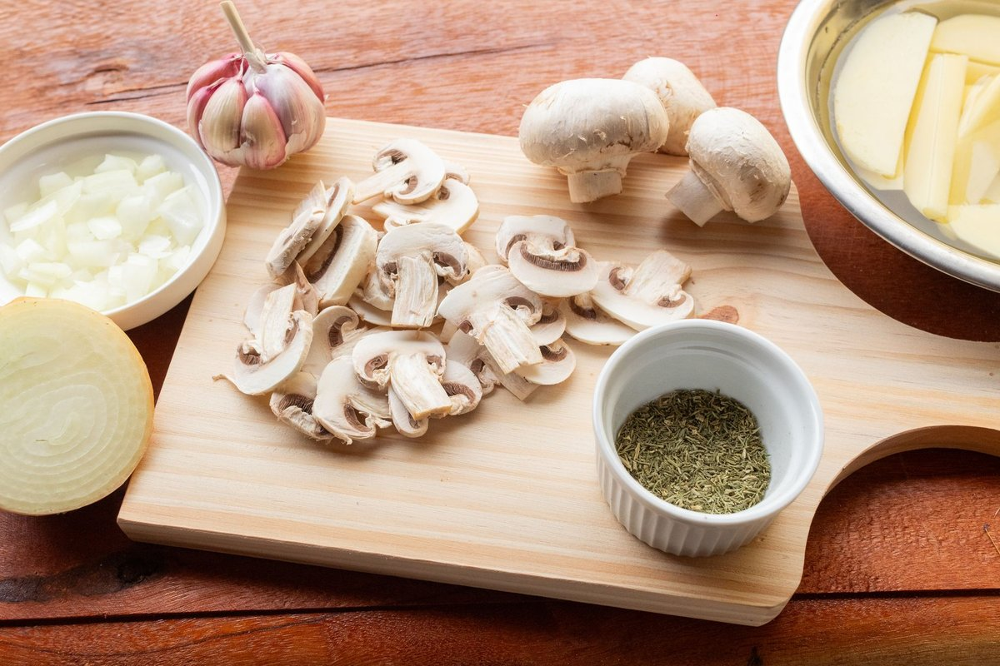
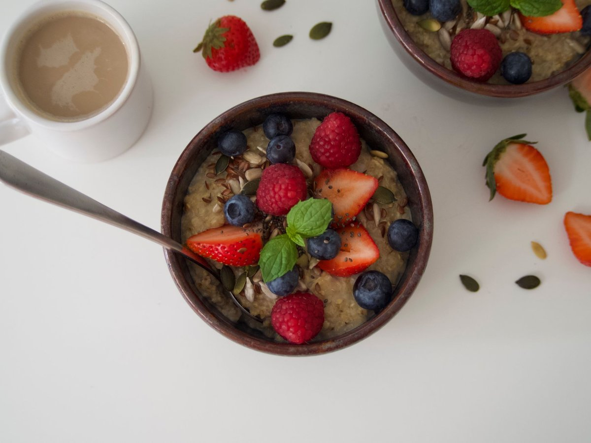

Ultra-Processed Foods Linked To Hidden Muscle Fat That May Threaten Your Knees

Key takeaways
- I used to think my aching joints were just a normal part of getting older until my doctor pointed out something shocking.
- Recent studies show Ultra-Processed Foods Linked To Hidden Muscle Fat That May Threaten Your Knees, and it hit me hard because my pantry w
- Track what feels sustainable and adjust gradually.
I used to think my aching joints were just a normal part of getting older until my doctor pointed out something shocking. Recent studies show Ultra-Processed Foods Linked To Hidden Muscle Fat That May Threaten Your Knees, and it hit me hard because my pantry was full of them.
It turns out that marbling isn't just for steaks. Intramuscular fat can quietly accumulate right inside our quad muscles, destabilizing the joint long before we ever notice changes on the bathroom scale.
If you've been relying on convenience meals like frozen breakfast sandwiches, packaged protein bars, or flavored instant oatmeal, you might be feeding this silent muscle change without realizing it. I certainly was.
When lipid droplets seep into the vastus lateralis and medialis muscles, the stabilizing strength of your thigh declines. This places direct, unbuffered mechanical strain on your knee cartilage during everyday movements like taking the stairs.
To combat this hidden fat accumulation, swapping out heavily processed shelf-stable items for whole foods is essential. You can check out this related healthy tip on making quick pantry swaps that don't take hours of cooking.
I started small by replacing my morning packaged energy bar with plain Greek yogurt topped with raw walnuts and blueberries. Within weeks, my legs felt sturdier during my evening walks.
The 2-Minute Win
Check the ingredient label on your favorite snack. If it contains hydrogenated oils, emulsifiers, or soybean oil, swap it today for a handful of dry-roasted almonds or pumpkin seeds.
Adding targeted strength work alongside dietary improvements makes a massive difference. Try incorporating slow, controlled bodyweight wall sits to activate your deep thigh fibers while eating clean, nutrient-dense foods.
Reading food labels can feel overwhelming at first. Take a look at this another practical guide to simplify grocery shopping without spending extra cash.
Focus on small, daily food improvements rather than total overhaul perfection; your joints reward consistency over intensity.
Swapping out processed deli meats for real roasted chicken breast helps cut down on industrial emulsifiers known to disrupt metabolic balance. You might also want to read this similar wellness insight on keeping inflation-friendly whole foods in your fridge.
Remember that building healthy habits takes time and patience with yourself. Here is a resource to help you stay consistent with this journey without feeling overwhelmed.
Take charge of your joint health today by making conscious whole-food choices that nourish your body from the inside out. For further reading, feel free to explore more healthy-habits guides available on our site.
Educational only — not medical advice.
Recommended Reading
- Is Your Toddler Eating Ultra-Processed Foods? The Shocking Truth About Toddler Meals
- Ultra-Processed Foods: The Hidden Focus Thief in Your Diet
- The Ultimate Guide to Daily Hydration: Boost Energy & Wellness
More in healthy-habits

healthy-habitsWhat Nobody Tells You About The Whole Grain Sweet Spot
Discover how Scientists Find The Whole Grain “Sweet Spot” For Better Heart Health with these practical, real-life tips f
Read article → healthy-habits
healthy-habitsCompound In Blueberries May Help Muscle Cells Burn Excess Fat
Discover how a compound in blueberries may help muscle cells burn excess fat with these simple, practical habits you can
Read article →Related posts
What Nobody Tells You About The Whole Grain Sweet Spot
Discover how Scientists Find The Whole Grain “Sweet Spot” For Better Heart Health with these practical, real-life tips f
Read article →healthy-habitsCompound In Blueberries May Help Muscle Cells Burn Excess Fat
Discover how a compound in blueberries may help muscle cells burn excess fat with these simple, practical habits you can
Read article → healthy-habits
healthy-habitsThis Lifestyle Program Improved Cognition 55% More Than Basic Health Advice
Discover how This Lifestyle Program Improved Cognition 55% More Than Basic Health Advice with practical, science-backed
Read article →